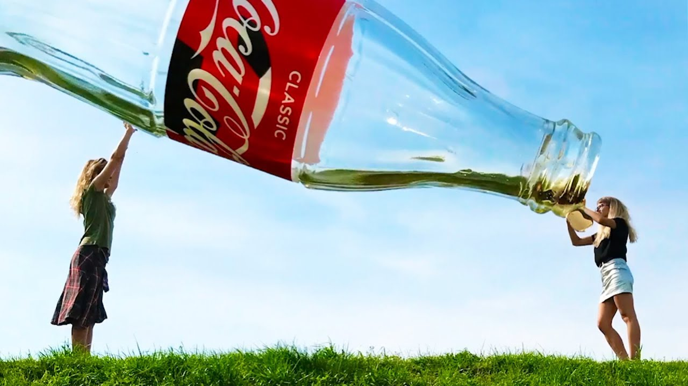
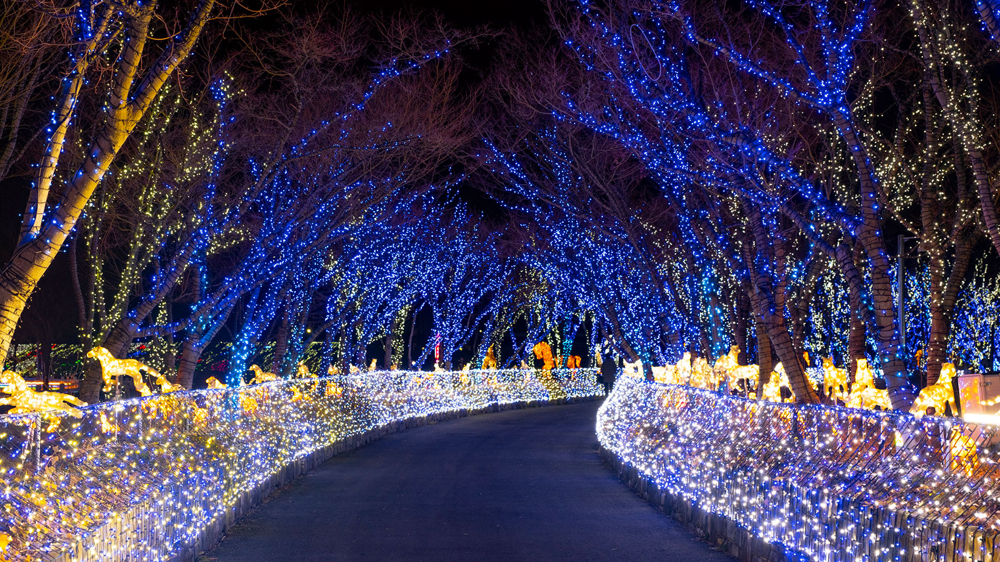
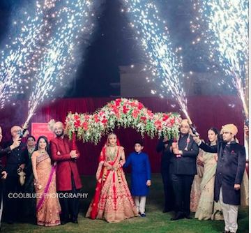

I am Tarun vyas founder at TVC TECH.
Photography is the art, application and practice of creating durable images by recording light or other electromagnetic radiation, either electronically by means of an image sensor, or chemically by means of a light-sensitive material such as photographic film.

1. Portrait
5 Tips every portrait photographer should know.
1. Pick The Perfect Background For Your Subject.
2. Prepare Your Portrait Subject For The Shoot.
3. Pose Your Portrait Subject Like A Pro.
4. Blur The Background Using Aperture Priority Mode.
5. Focus On The Eyes


2. Blur
3 Tips for Capturing Motion Photography You.
1.Use a Slower Shutter Speed.
2.Be Aware of Lighting.
3.Stabilize your camera.

3. Creative
7 Tips for Capturing creative photography
1.Take Account of People.
2. Zooming While Shooting.
3. Creative Focusing.
4. Multiple Exposures.
5. Use Freelensing To Create Tilt-Shift Effect.
6. Use Panning To Capture Moving Subject.
7. Level Up Portraits With Levitation Photography.


4. Light
5 Tips for capturing a perfect light picture
1. PLACE YOUR LIGHT SOURCE CLOSE TO YOUR SUBJECT.
2. INCLUDE SHADOWS FOR A THREE-DIMENSIONAL LOOK.
3. KEEP COLOR TEMPERATURE IN MIND WHILE SHOOTING.
4. Shoot in Aperture Priority mode.
5. Use a light catching backdrop.

5. Wedding
Some tips for Wedding Pre Photo Shoot
1. Fix Your Camera.
2. Do not Go Solo.
3. Pre-plan the Shoot.
4. Shoot the Reactions.
5. Looks For Smiles.
6. Looks for random click.


Gallery

------------------------
TVC TECH
Photography
-------------------
Number
+91-6378755252
--------------